Цветовая маркировка диодов
| Тип диода | Цвет корпуса или метка на корпусе |
Метка у анода (+) |
Метка у катода (-) |
Внешний вид |
|---|---|---|---|---|
| Д9Б | - | Красное кольцо | - | |
| Д9В | - | Оранжевое или красное + оранжевое кольцо |
- | |
| Д9Г | - | желтое или красное + желтое кольцо |
- | |
| Д9Д | - | Белое или красное + белое кольцо |
- | |
| Д9Е | - | Голубое или красное + голубое кольца |
- | |
| Д9Ж | - | Зеленое или красное + зеленое кольцо |
- | |
| Д9И | - | Два желтых кольца | - | |
| Д9К | - | Два белых кольца | - | 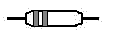 |
| Д9Л | - | Два зеленых кольца | - | |
| Д9М | - | Два голубых кольца | - | |
| КД102А | - | Зеленая точка | - | |
| КД102Б | - | Синяя точка | - | 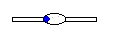 |
| 2Д102А | - | Желтая точка | - | 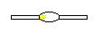 |
| 2Д102Б | - | Оранжевая точка | - | 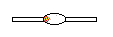 |
| КД103А | Черный | Синяя точка | - | 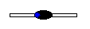 |
| КД103Б | Зеленый | Желтая точка | - | 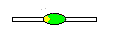 |
| 2Д103А | - | Белая точка | - | 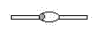 |
| КД105Б | Точка остутсвует | Белая или желтая полоса |
- | |
| КД105В | Зеленая точка | Белая или желтая полоса |
- | 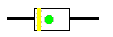 |
| КД105Г | Красная точка | Белая или желтая полоса |
- | 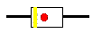 |
| КД105Д | Белая или желтая точка |
Белая или желтая полоса |
- | |
| КД208А | Желтая точка | Черная, Зеленая или желтая точка |
- | 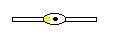 |
| КД209А | - | Черная, Зеленая или желтая точка |
- | 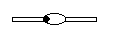 |
| КД209Б | Белая точка | Черная, Зеленая или желтая точка |
- | 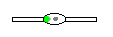 |
| КД209В | Черная точка | Черная, Зеленая или желтая точка |
- | 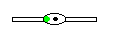 |
| КД209Г | Зеленая точка | Черная, Зеленая или желтая точка |
- | 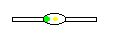 |
| КД221А | - | Голубая точка | - | 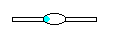 |
| КД221Б | Белая точка | Голубая точка | - | 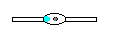 |
| КД221В | Черная точка | Голубая точка | - | 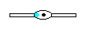 |
| КД221Г | Зеленая точка | Голубая точка | - | 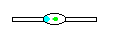 |
| КД221Д | Бежевая точка | Голубая точка | - | 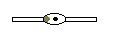 |
| КД221Е | Желтая точка | Голубая точка | - | 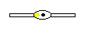 |
| КД226А | - | - | Оранжевое кольцо | |
| КД226Б | - | - | Красное кольцо | |
| КД226В | - | - | Зеленое кольцо | 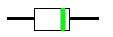 |
| КД226Г | - | - | Желтое кольцо | 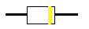 |
| КД226Д | - | - | Белое кольцо | 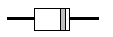 |
| КД226Е | - | - | Голубое кольцо | 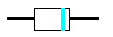 |
| КД243А | - | - | Фиолетовое кольцо | 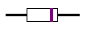 |
| КД243Б | - | - | Оранжевое кольцо | 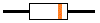 |
| КД243В | - | - | Красное кольцо | 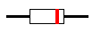 |
| КД243Г | - | - | Зеленое кольцо | 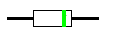 |
| КД243Д | - | - | Желтое кольцо | |
| КД243Е | - | - | Белое кольцо | 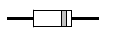 |
| КД243Ж | - | - | Голубое кольцо | 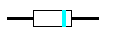 |
| КД247А | - | - | Два фиолетовых кольца |
|
| КД247Б | - | - | Два оранжевых кольца |
|
| КД247В | - | - | Два красных кольца |
|
| КД247Г | - | - | Два зеленых кольца |
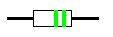 |
| КД247Д | - | - | Два желтых кольца |
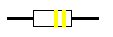 |
| КД247Е | - | - | Два белых кольца |
|
| КД247Ж | - | - | Два голубых кольца |
|
| КД410А | - | Красная точка | - | 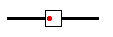 |
| КД410Б | - | Синяя точка | - | 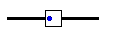 |
| КД509А | - | Синее узкое кольцо | Синее широкое кольцо |
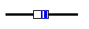 |
| 2Д509А | - | Синяя точка и узкое кольцо |
Синее широкое кольцо |
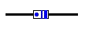 |
| КД510А | - | Два зеленых узких кольца |
Зеленое широкое кольцо |
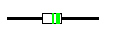 |
| 2Д510А | - | Зеленая точка и узкое кольцо |
Зеленое широкое кольцо |
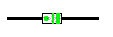 |
| КД521А | - | Два синих узких кольца |
Синее широкое кольцо |
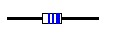 |
| КД521Б | - | Два серых узких кольца |
Серое широкое кольцо |
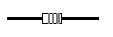 |
| КД521В | - | Два желтых узких кольца |
Желтое широкое кольцо |
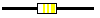 |
| КД521Г | - | Два белых узких кольца |
Белое широкое кольцо |
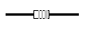 |
| КД522А | - | Черное широкое кольцо | Черное узкое кольцо |
|
| КД522Б | - | Черное широкое кольцо | Два черных узких кольца |
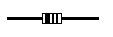 |
| 2Д522Б | - | Черное широкое кольцо | Черная точка | 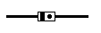 |
| КД906 | Белая полоса у четвертого вывода |
- | - | |
| КДС111А | Красная точка | - | - | |
| КДС111Б | Зеленая точка | - | - | |
| КДС111В | Желтая точка | - | - | |
| КЦ422А | - | - | Черная точка | 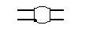 |
| КЦ422Б | Белая точка | - | Черная точка | 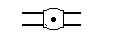 |
| КЦ422В | Черная точка | - | Черная точка | 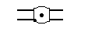 |
| КЦ422Г | Зеленая точка | - | Черная точка | 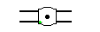 |